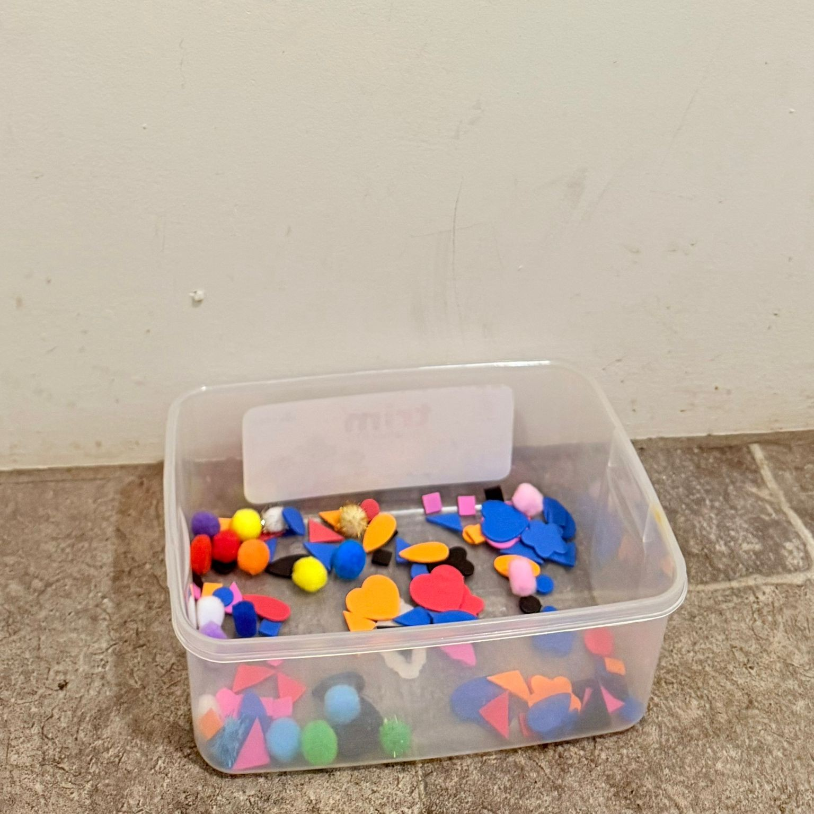
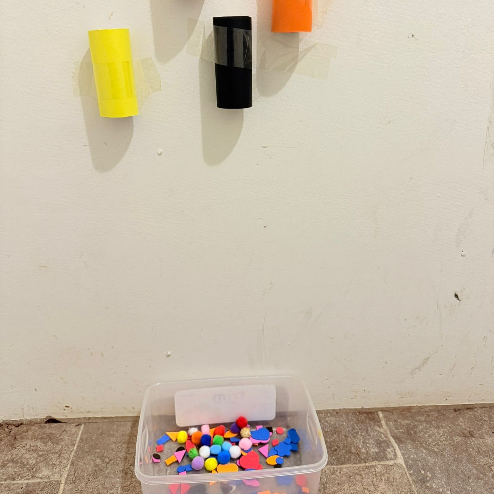
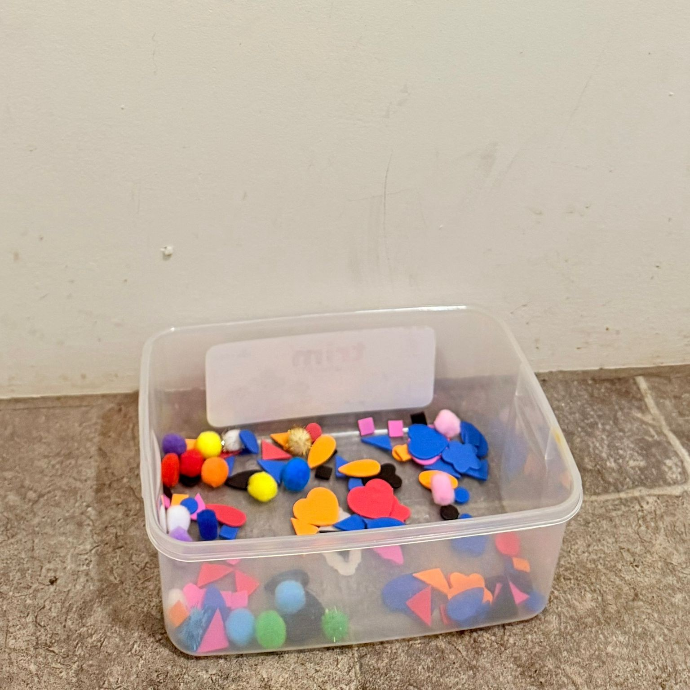
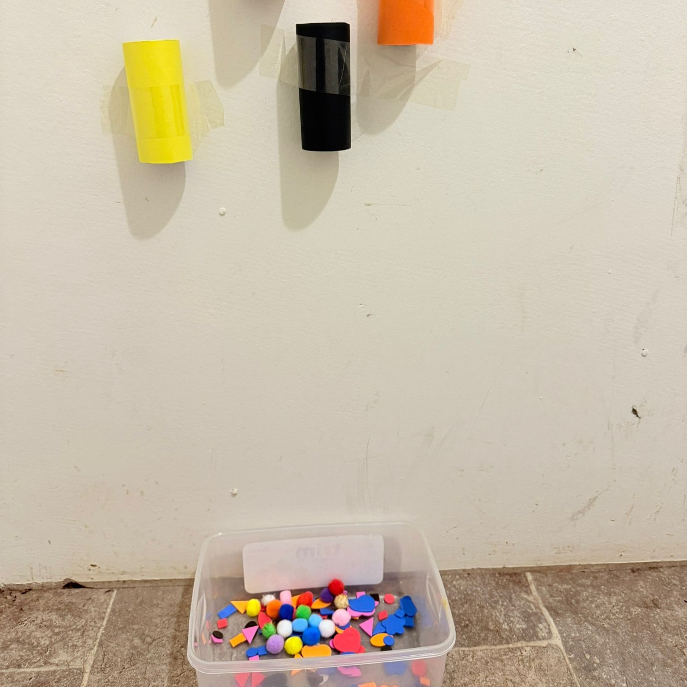
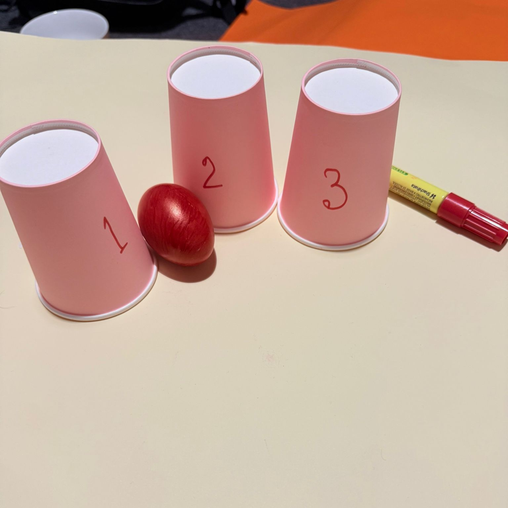
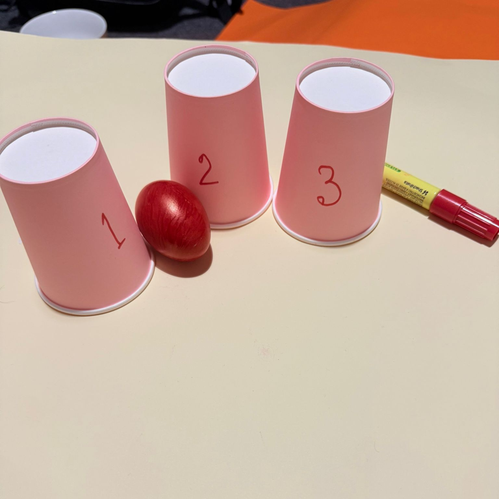

Digital Evidence
Art
Pom-Pom Balls (0-2 years)
 



Pop Sticks Chicks (2-3 years)


Drama & Puppetry
Cliffy Crab Story Play (2-3 years)


Game with Cups Role-Play (3-5 years)

 


Movement & Music
Our Head, Shoulders, Knees and Toes Dance:
Homemade Instrument Band (3-5 years)
Language & Literacy
Puppet Storytelling (2–3 years)
The Class Story Creation with Caterpillar Craft (3–5 years)
Science
Magnet Discovery (2–3 years)
Sink or Float Investigation (3–5 years)

Engineering
Soft Block Stacking (0–2 years)

Bridge Building Challenge (3–5 years)
Technologies
Photo Exploration (2–3 years)
Digital Story Creation (3–5 years)
Mathematics and Numeracy
Shape Hunt (2–3 years)
Pattern Making (3–5 years)

Humanities and social sciences
Family Photo Sharing (0–2 years)
Map-Making (3–5 years)
Integrated Curriculum
Build a Paper Tower (2–3 years)
Rolling Cars on Ramps (3–5 years)
Critical Reflection
Art
Popstick Chick Puppet Play (2–3 years)
The Popstick Chick Puppet Play worked well because the children were eager to use their puppets in storytelling. They made chick sounds, moved the puppets around, and created simple stories about what their chick was doing. The activity encouraged children to use their voices, explore character roles, and build confidence in sharing ideas (Anders, 2021). Even children who were usually quiet became more involved, showing the activity’s value for communication development.
One improvement would be to provide a small puppet theatre or stage. This would give the children a space to focus their storytelling and help organise their play. I would also allow more time for children to plan and practise their stories before performing them for others.
Pom-Pom Balls (0–2 years)
The Pom-Pom Balls activity worked well because the babies were very engaged in touching, picking up, and exploring the soft pom-poms. They showed curiosity and used their hands to grasp and move the pom-poms, which supported sensory learning and fine motor development (Howard & Mayesky, 2022).
One improvement would be to introduce small containers or baskets so babies could practise filling, emptying, and transferring the pom-poms. This would extend the activity and give more variety, keeping the babies interested for longer. I would also add simple language or songs about colours and textures to support communication.
Drama & Puppetry
Cliffy Crab Story Play (2–3 years)
The Cliffy Crab Story Play went well because the children enjoyed moving like crabs, using their hands as pincers and walking sideways. They showed imagination by creating little stories about what the crab was doing and where it was going. The activity encouraged children to work together, take turns, and use language to share ideas (Howard & Mayesky, 2022).
One thing I would improve is to provide simple props, like blue fabric for the sea or shells to inspire more storytelling ideas. Next time, I would also encourage the children to act out a shared story as a group, helping to build collaboration and shared meaning.
Game with Cups Role-Play (3–5 years)
The Game with Cups Role-Play was successful because the children enjoyed pretending to serve tea or act as customers. They showed imagination, used rich language, and worked together to build their play scenes (Wanerman, 2010). The activity supported social development, as children practised turn-taking and negotiating roles during the play.
To improve this experience, I would add simple role cards (e.g., customer, server) to give clearer guidance and reduce moments when children became too excited or found it hard to share. I would also offer more props (like plates or menus) to help extend the pretend scenarios and encourage deeper storytelling.
Movement and Music
Homemade Instrument Band (3–5 years)
The Homemade Instrument Band was similarly interactive. Children enjoyed building instruments from recyclables and enjoyed exploring various sounds. Play together encouraged turn-taking, listening, and cooperation (Howard & Mayesky, 2022). It also opened a window for children to find rhythm, tempo, and loudness in a fun manner. I would tape the performance and then play it back to the children so that they can listen to themselves playing. I would provide them with some control in choosing their own song or making their own rhythms for purposes of ownership and creativity.
Homemade Instrument Band (3–5 years)
The Homemade Instrument Band was similarly interactive. Children enjoyed building instruments from recyclables and enjoyed exploring various sounds. Play together encouraged turn-taking, listening, and cooperation (Howard & Mayesky, 2022). It also opened a window for children to find rhythm, tempo, and loudness in a fun manner. I would tape the performance and then play it back to the children so that they can listen to themselves playing. I would provide them with some control in choosing their own song or making their own rhythms for purposes of ownership and creativity.
Language and Literacy
Puppet Storytelling (2–3 years)
The Puppet Storytelling activity worked, as children loved to bring stories to life through the puppets. They made animal sounds, acted out movements, and added their own ideas. Even the shy children contributed, showing how puppets can lead to confidence and communication (Howard & Mayesky, 2022).
An improvement on this activity would be to provide a small puppet stage or backdrop. This would focus the play, structure the story, and enrich the experience for both the participating children and observers.
The Class Story Creation with Caterpillar Craft (3–5 years)
The Class Story Creation with Caterpillar Craft worked well. Children shared ideas for characters and settings, listened to each other, and worked together to make a complete story. They enjoyed seeing their ideas on paper and creating colorful caterpillar crafts using paper circles, glue, and decorations. This activity supported creativity, teamwork, and fine motor skills (Howard & Mayesky, 2022).
An improvement would be to make the story in smaller steps. Children could first work in pairs or small groups, then join together. This would help them stay focused, take part actively, and make sure everyone’s ideas were included.
Science
Magnet Discovery (2–3 years)
The Magnet Discovery activity worked well because the children were curious and eager to test different objects. They enjoyed predicting whether an item would stick to the magnet and were excited to check their results. The activity enabled language acquisition, problem-solving, and fine motor skills (Howard & Mayesky, 2022).
An improvement for this activity would be to provide more types of objects, such as natural materials such as leaves or stones and man-made objects such as keys or paper clips. This would give children a larger ability to compare and sort, increasing the task and encouraging further investigation.
Sink or Float Investigation (3–5 years)
The Sink or Float Investigation also worked well. The children were engaged in testing each object and recording their results using drawings and symbols. This supported their observation skills, sorting abilities, and early data recording.
An improvement for this activity would be the inclusion of a short group discussion before the experiment when children can make predictions and a second discussion after testing when outcomes are contrasted. This will require children to justify their thoughts, listen, and build a richer understanding of the concepts being dealt with.
Engineering
Soft Block Stacking (0–2 years)
Soft Block Stacking was successful because the babies were highly engaged in touching, stacking, and knocking over the foam blocks. They tested the cause and effect by seeing what happened when blocks were stacked higher or toppled over. The activity challenged their sensory growth, fine motor skills, and pre-concept of balance (Howard & Mayesky, 2022).
Bridge Building Challenge (3–5 years)
The Bridge Building Challenge activity was also successful. The children were eager to use blocks, straws, and sticks to design bridges. They tested their creations with toy cars or animals and showed persistence by making adjustments when the bridges collapsed. This activity supported problem-solving, teamwork, and creative thinking (Zabawa, 2019).
Technologies
Photo Exploration (2–3 years)
The Photo Exploration activity was effective because the children enjoyed capturing photos with the child-safe camera. They chose objects and people to take photos of carefully, pressed the button gently, and displayed their photos proudly to others. This activity enhanced their observation skills, fine motor control, and communication (NAEYC, n.d.).
An improvement for this activity would be to include a theme challenge, such as "find something that is red" or "take a picture of a circle." This would help focus children's vision, scrutinize their environment more closely, and think about in a creative sense what to take a picture of.
Digital Story Creation (3–5 years)
The Digital Story Creation activity also worked well because the children enjoyed creating their own stories using images and voice recordings. They worked together to choose characters and events, recorded their voices, and listened to the finished stories. This activity encouraged imagination, teamwork, and a sense of pride in their work (Howard & Mayesky, 2022).
An improvement for this activity would be to provide props or dress-up clothes so children could act out their stories before recording them. This would combine technology with dramatic play and give children more ways to share and develop their ideas.
Mathematics and Numeracy
Shape Hunt (2–3 years)
Shape Hunt activity was successful because children enjoyed hunting for shapes inside and outside the classroom. They were thrilled to recognize shapes they had discovered using the cards and learned to recognize circles, squares, and triangles. The activity promoted the development of observation skills, vocabulary, and early recognition of shapes (McDonald, 2019).
An improvement suggestion for this activity is the addition of more shapes, such as rectangles, ovals, and stars. This would give children more exposure to new shapes to learn and practice matching and identifying different shapes.
Pattern Making (3–5 years)
Pattern Making activity was successful as children enjoyed making and extending patterns with beads, blocks, and natural materials. A few of the children invented their own patterns, which encouraged creativity, sequencing, and problem-solving (Littledyke, 2014).
An alternative to this activity would be to give small tasks, i.e., "make a repeating pattern using three colors or shapes." This would test children further to anticipate and create more complex pattern-making abilities.
Humanities and social sciences
Family Photo Sharing (0–2 years)
The Family Photo Sharing activity worked well because the babies enjoyed looking at familiar faces in the photos. They listened with interest when educators named family members and described their roles. This supported early language skills, a sense of belonging, and social connection (Stonehouse, 2012). It also helped strengthen relationships between the child, educator, and family.
An improvement would be to invite families to share photos of special events or cultural celebrations. This would allow children to see and hear about their own traditions and help educators introduce and discuss different cultures within the group.
Map-Making (3–5 years)
The Map-Making activity worked because kids enjoyed drawing playground maps and dropping symbols for swings, sandpits, and other features. This supported spatial awareness, creativity, and problem-solving (Howard & Mayesky, 2022).
An improvement for this activity would be to take children on a short “mapping walk” before they start drawing. This would help them notice more details in the environment and include them in their maps.
Integrated curriculum (STEM, STEAM, STREAM & STEMIE)
Build a Paper Tower (2–3 years)
The Build a Paper Tower activity succeeded due to children enjoying folding and building paper into tall towers. They tried out how to keep the paper stable and improvised when the tower collapsed. This enhanced problem-solving, hand–eye coordination, and early engineering capabilities in them (Fleer & Raban, n.d.).
One modification of this exercise is to give children a range of paper material, for example, cardboard, newspaper, and tissue paper. This would enable them to see how each of these different materials affects the strength and stability of the tower and think about more and attempt more.
Rolling Cars on Ramps (3–5 years)
Rolling Cars on Ramps was a success since kids loved creating ramps using cardboard and tubes, rolling the cars, and watching how far they travel. They learned that changing the height or slope of the ramp makes the cars travel at different speeds. This embedded scientific thinking, prediction, and collaboration (Howard & Mayesky, 2022).
An improvement for this activity would be to provide a measuring tape so that children are able to measure and track the distance traveled by the cars. This would increase early numeracy and enable them to compare, which will result in discussion and critical thinking.